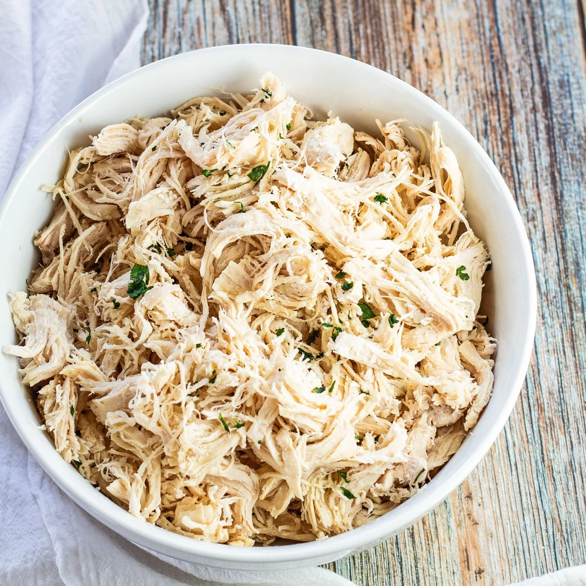
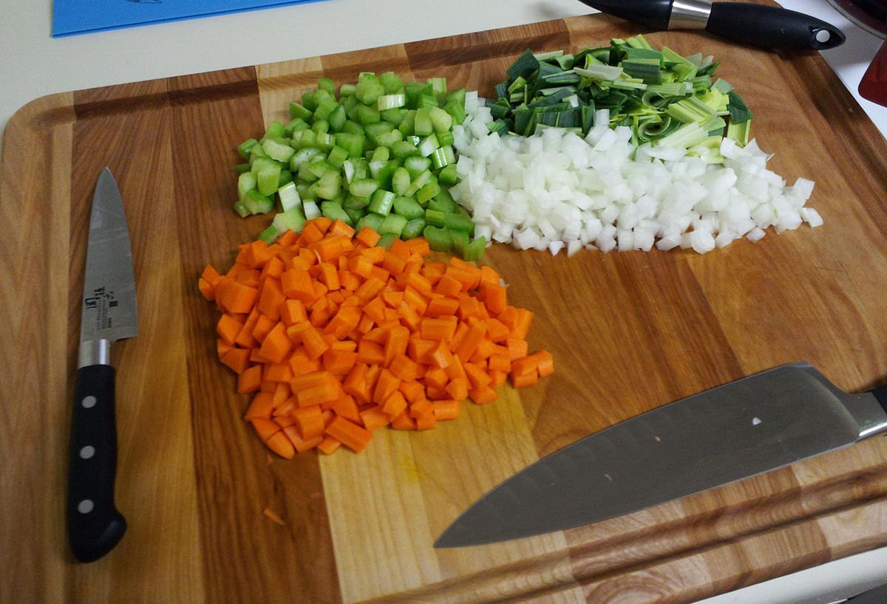
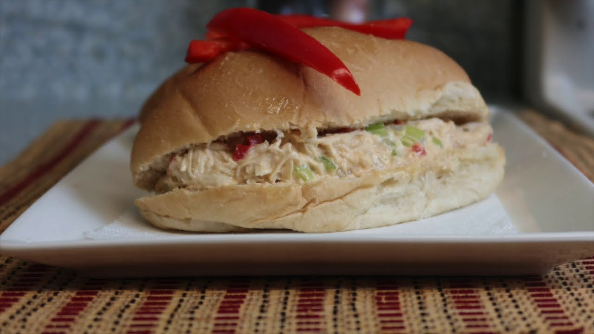

Luego de 3 minutos agregamos el pollo y mezclamos, sazonamos con sal y consome,
untamos los panes con aderezo hecho con ketchup mayonesa y
mostaza y ponemos nuestra mezcla, y llevamos al sarten a calentar, podemos agregar queso y lechuga


| Descripcion | Foto | Opinion |
|---|---|---|
| Cocemos el pollo y desmenuzamos |  | No cocer de mas |
| Cortamos cebolla, chile pimiento apio, y freimos |  | no cortar muy chiquito |
Luego de 3 minutos agregamos el pollo y mezclamos, sazonamos con sal y consome, untamos los panes con aderezo hecho con ketchup mayonesa y mostaza y ponemos nuestra mezcla, y llevamos al sarten a calentar, podemos agregar queso y lechuga |
 | A disfrutar |